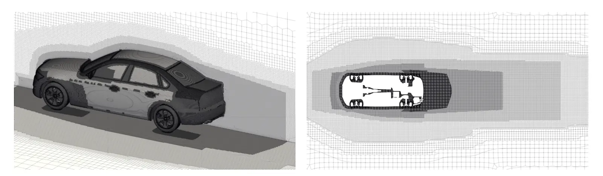
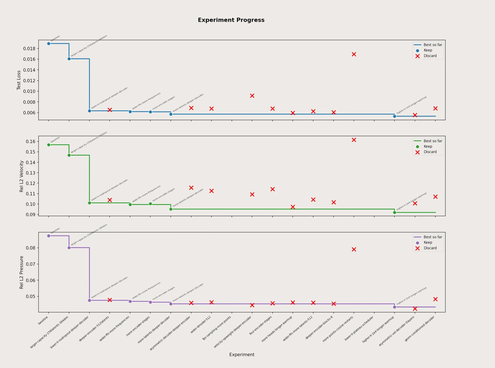
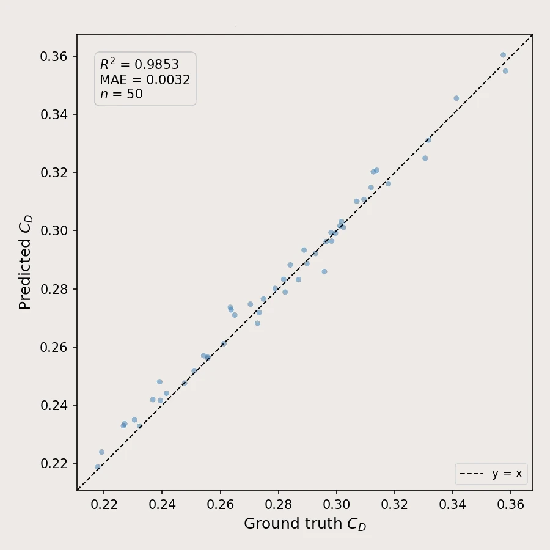
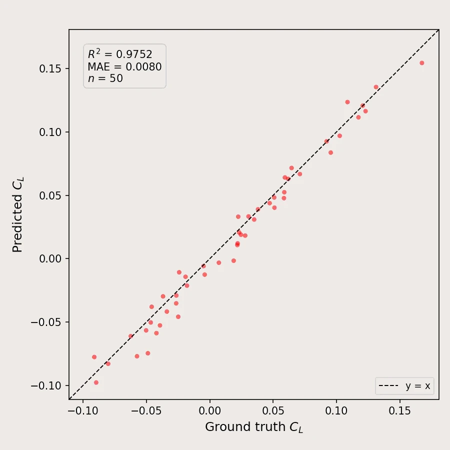
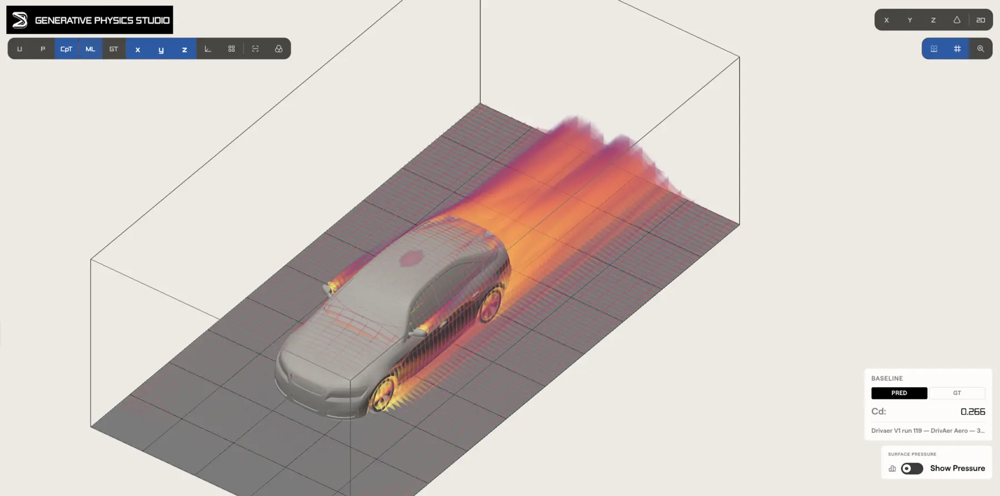
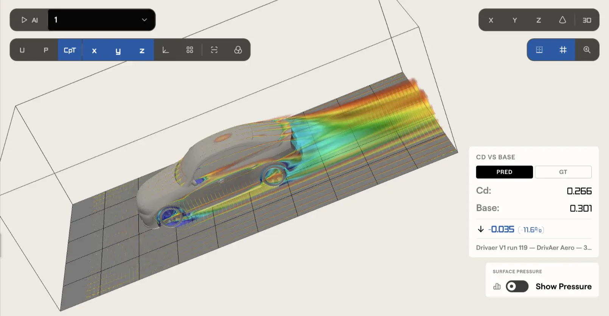

Physics Factory · DrivAerML benchmark
Built Autonomously, Achieves 1st Place on DrivAerML
The Physics AI model built autonomously in Physics Factory takes 1st place on the DrivAerML benchmark, ahead of models hand-built by world-class AI research teams.

Physics Factory took the DrivAerML benchmark from raw dataset to a deployed model with a single plain English goal and under 30 minutes of our hands-on time. Its agent crews analysed the data, then composed, trained and evaluated architectures from BeyondMath's library of building blocks until one won. That model takes 1st place on the benchmark's headline metrics beating models hand-built by world-class researchers.
The headline numbers
#1
on the benchmark's headline metrics
<30 min
of human hands-on time
0
AI researchers or consultants hired
No need to hire world-class AI researchers. No need to pay expensive consultants. Your existing engineers direct the factory; the crews do the machine learning.
| Model | Surface pressure | Volume pressure | Velocity |
|---|---|---|---|
| Physics Factory model | 3.53 | 3.83 | 4.98 |
| Transolver-3 (Tsinghua University) | 3.71 | 5.72 | 4.14 |
| AB-UPT (Emmi AI) | 3.82 | 6.08 | 5.93 |
| Transolver (Tsinghua University) | 4.81 | 7.74 | 6.78 |
| Model | Drag (Cd) | Lift (Cl) |
|---|---|---|
| Physics Factory model | 0.985 | 0.975 |
| Transolver-3 (Tsinghua University) | 0.972 | 0.985 |
| AB-UPT (Emmi AI) | 0.963 | 0.975 |
Physics AI has a time and cost problem
A high-fidelity simulation of a full vehicle costs thousands of dollars and days of wall-clock time per design. That is why most engineering programmes settle for evaluating a handful of geometries when they would rather evaluate hundreds or even thousands.
Physics AI models change these economics completely. Once trained on your simulation data, they deliver predictions in seconds. Exploring fifty variants transforms from a quarter-long ordeal into a single afternoon.
The catch has never been whether physics AI works. It is the time and cost required to build and deploy it.
Until now, an organisation wanting to deploy state-of-the-art physics AI was stuck with two expensive, inefficient paths:
- Hire top-tier AI researchers: Elite AI PhDs are scarce, prohibitively expensive, and often more drawn to frontier AI research labs than to engineering companies.
- Engage consultants: External firms are costly, move slowly, and are structurally incentivised to keep engagements running rather than handing off working capability.
This leaves engineering leaders in a bind: either spend millions competing for rare AI talent, pay ongoing consultancy bills, or risk falling behind while competitors iterate faster.
Physics Factory: deploy benchmark-leading AI across your entire org
We built Physics Factory to eliminate these bottlenecks. It empowers your existing simulation teams to build, optimise, and deploy custom Physics AI models across the organisation, without hiring dedicated AI researchers or relying on third-party consultants.
Physics Factory is an agentic platform: you input your simulation data and engineering goals, and a fully optimised, production-ready Physics AI model comes out.
Five autonomous agent crews, Organise, Analyse, Train, Optimise, and Predict, handle model creation around the clock, guided directly by your domain engineers:
- Tailored Architecture Composition: Rather than pulling generic models off a shelf, the crews assemble custom architectures from BeyondMath's library of foundational physics AI building blocks, including specialised encoders, attention mechanisms, decoders, and physics constraints across aerodynamic, thermal, structural, and electromagnetic domains.
- Rigorous Automated Experimentation: The crews execute controlled experiments, systematically varying architectures, running benchmarks, and comparing results against your performance targets. No model ships based on old assumptions, it deploys only after empirically proving its superiority on your data.
- No Quality Compromises: Physics Factory models achieve benchmark-leading accuracy, routinely matching or outperforming models manually crafted by elite physics AI researchers.
- Complete Transparency & Reproducibility: Every architectural decision is reasoned and logged in plain English. Your engineering team retains full visibility and control without needing deep AI expertise.
An AI agent · at 04:19 · unprompted
Optimise agent: "The champion has plateaued, so I'm changing the architecture: adding another decoder block to sharpen the surface field reconstruction. Relaunching to compare."
By turning complex model development into an automated, internal workflow, Physics Factory gives your engineering teams world-class physics AI capabilities at a fraction of the time and cost.
The Test: DrivAerML Benchmark
Every physics AI company measures itself on DrivAerML. It is the industry's standard automotive aerodynamics benchmark containing 500 variants of the DrivAer vehicle geometry, each simulated with scale-resolving hybrid RANS-LES at roughly 160 million cells. This costs around a million dollars of CFD compute. The task is to predict surface pressure, volumetric pressure and velocity fields, and the drag and lift coefficients, for unseen designs.

It is also exactly the shape of problem our customers bring us: a bucket of expensive simulation results and the question can we stop re-running these?
So we ran the experiment our pitch implies. We connected the DrivAerML dataset to Physics Factory, wrote the goal in plain English: predict surface and volume fields and force coefficients for unseen geometries, prioritising surface pressure and drag. We set the budget cap, and let the crews work.
What the factory did
The Organise crew inventoried and versioned the runs. The Analyse crew profiled the data and flagged that pressure and velocity fields are on different scales, choosing per-field normalisation before training began. The Train and Optimise crews then ran the campaign: experiment after experiment, each one an architecture composed from the building-block library, each failure analysed and each fix tested — the kind of search a hand-built project never has time to run.
You can read the whole campaign in the experiment log. Every run is named by the crew that launched it — lower-lr-nodropout-deeper-decoder, more-latents-deeper-decoder, higher-lr-2e4-longer-warmup — and every one is kept or discarded on the evidence:

The champion that emerged is a point-wise, mesh-agnostic encoder–decoder that ingests raw STL geometry, queries predictions at arbitrary points, and streams inference across meshes of 150 million+ points — paired with a lean dedicated model for the force coefficients, because the crews determined that integrating coefficients from predicted fields accumulates error a direct scalar model avoids.
Our engineers' hands-on time across the whole campaign: under 30 minutes.
The results
The Physics Factory model takes first place on surface pressure, volume pressure and drag, with volume pressure error roughly a third lower than the next best published model. The table below is the full field-level picture: relative L2 error across surface pressure, volume pressure and velocity, against the next best published models.
| Model | Surface pressure | Volume pressure | Velocity |
|---|---|---|---|
| Physics Factory model | 3.53 | 3.83 | 4.98 |
| Transolver-3 (Tsinghua University) | 3.71 | 5.72 | 4.14 |
| AB-UPT (Emmi AI) | 3.82 | 6.08 | 5.93 |
| Transolver (Tsinghua University) | 4.81 | 7.74 | 6.78 |
The model also leads on the force coefficients: R² of 0.985 for drag and 0.975 for lift, against the same published models.
| Model | Drag (Cd) | Lift (Cl) |
|---|---|---|
| Physics Factory model | 0.985 | 0.975 |
| Transolver-3 (Tsinghua University) | 0.972 | 0.985 |
| AB-UPT (Emmi AI) | 0.963 | 0.975 |
A single R² score understates how usable these predictions are for design work. Across the 50 held-out geometries, drag is predicted with a mean absolute error of 0.0032, around three drag counts. What matters in practice is whether the model ranks test geometries in the right order, and gets the direction of a design change right, not just how close the absolute number is. The plots below show every held-out prediction against ground truth for both coefficients:


And the fields behind those coefficients hold up qualitatively. Here is the model's predicted total pressure field around an unseen test geometry, rendered in Generative Physics Studio. The wake structure an aerodynamicist would interrogate, is reconstructed by the model in seconds:

On two metrics, volume velocity and lift, Transolver-3 remains ahead, and we report that openly. But look at which two. Drag matters more than lift for a road car, and surface pressure matters more than the volumetric field: surface quantities are what determine the forces on the vehicle. Given a goal that said to prioritise surface pressure and drag, the crews spent their accuracy budget exactly where an aerodynamicist would tell them to. The champion was not selected to sweep a table; it was selected to be the most useful model for the job.
A note on methodology: we trained five models on five random splits of 400 training and 50 test geometries and report the median. Baseline numbers are as published by their authors on their own splits.
What this means
The headline is not just the performance numbers. It is how it was built.
Until now, results at this level belonged to organisations that could field a dedicated AI research team. Physics Factory moves that capability to any engineering organisation with simulation data. Your engineers stay in control, setting goals, approving plans, reviewing every logged decision, while the crews do the research-grade work, at platform pace and platform cost, inside your infrastructure, on data you own.
And a deployed model is where the payoff starts, not where it ends. With the model live behind Generative Physics Studio, an engineer can pull up a design variant, read its predicted drag against the baseline, and see exactly where in the flow the difference comes from in seconds, not days:

For an executive with an AI mandate: this is the option between unavailable talent and unaccountable consultants. For a simulation engineer: this is state-of-the-art physics AI you can deploy into your own workflow, without becoming an AI researcher first.
DrivAerML is the public checkpoint. Your data is the point.
Get access
Your first model comes back in hours.
Drop us a line and we'll set up your factory and put the agent crews to work on your data — CFD, FEA, thermal or beyond.
Get access